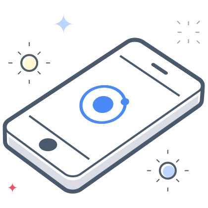

<ion-content class="ion-padding" fullscreen scroll-y="false">
  <ion-slides #mySlider pager="false">

    <ion-slide>
      <div class="slide">
        
        <h2>Bienvenido</h2>
        <p>Bienvenido a <b>Delphi</b>. Gracias por usar nuestra aplicación. Te explicaremos brevemente nuestro
          funcionamiento.</p>
        <ion-button (click)="swipeNext()" fill="clear">Siguiente
          <ion-icon name="arrow-forward" slot="end"></ion-icon>
        </ion-button>
      </div>
    </ion-slide>

    <ion-slide>
      
      <h2>¿Qué es Delphi?</h2>
      <p><b>Automatización de prevención de riesgos laborales</b> mediante la metodología Delphi.
        La hemos simplificado y optimizado para que tus procesos sean lo más rápidos posibles.</p>
      <ion-button (click)="swipeNext()" fill="clear">Siguiente
        <ion-icon name="arrow-forward" slot="end"></ion-icon>
      </ion-button>
    </ion-slide>

    <ion-slide>
      
      <h2>¿Qué tengo que hacer?</h2>
      <p><b>Participa o crea</b> procesos y comienza a garantizar la seguridad de los empleados.</p>
      <ion-button (click)="swipeNext()" fill="clear">Siguiente
        <ion-icon name="arrow-forward" slot="end"></ion-icon>
      </ion-button>
    </ion-slide>

    <ion-slide>
      
      <h2>¿Listo para comenzar?</h2>
      <ion-button (click)="endSwiper()" fill="clear">Ir a la aplicación
        <ion-icon name="arrow-forward" slot="end"></ion-icon>
      </ion-button>
    </ion-slide>

  </ion-slides>
</ion-content>
